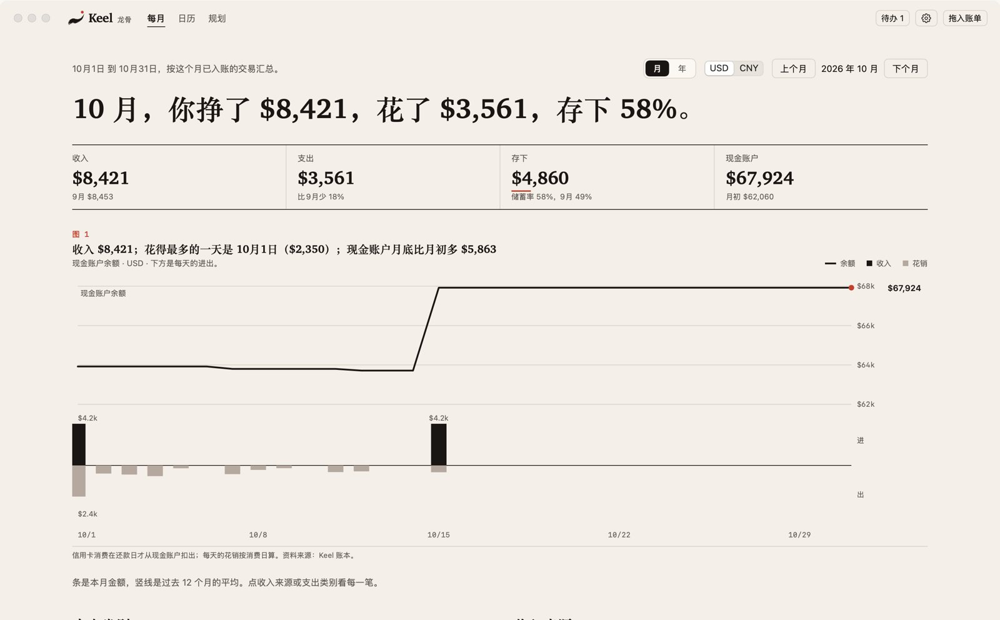
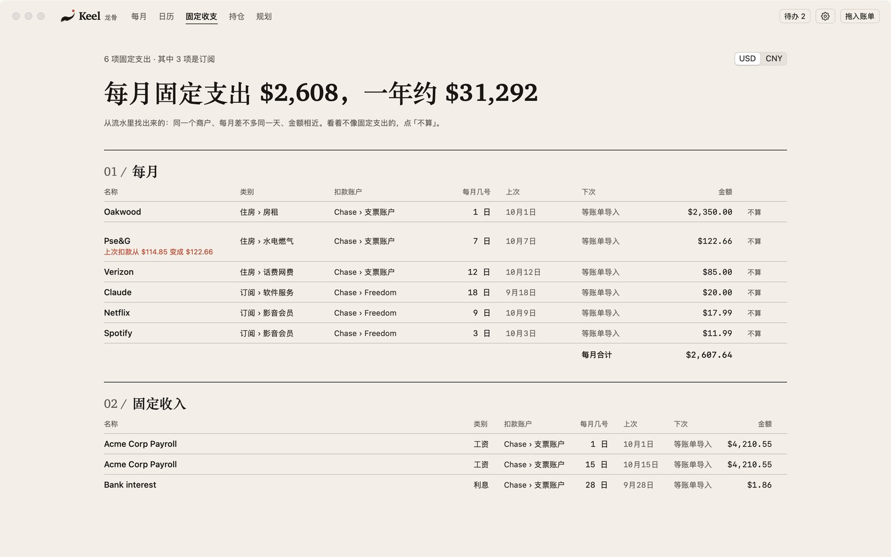
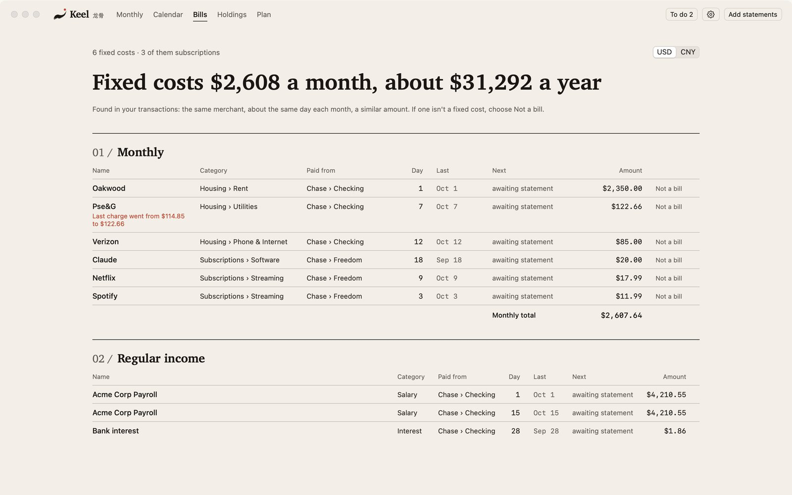
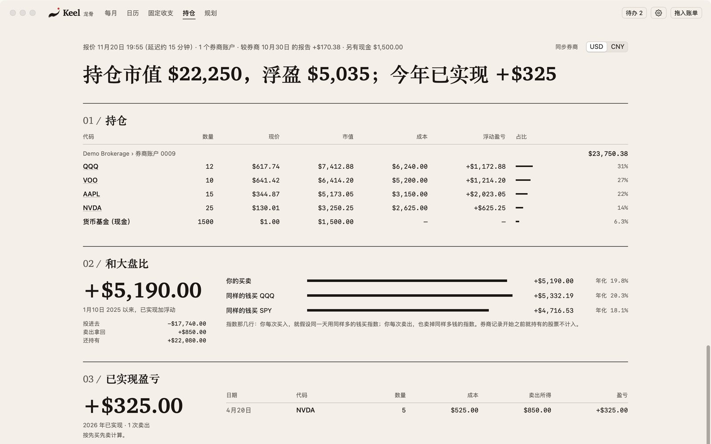
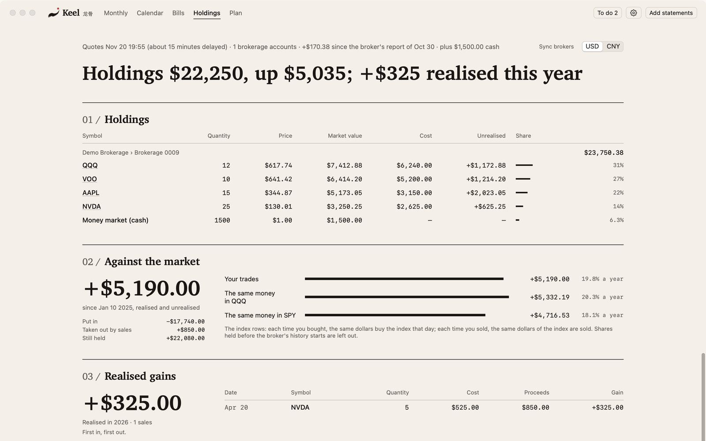

把每一笔账记清楚，再看清离财务自由还有多远。Keep every dollar accounted for, and see how far financial freedom is.
把银行、信用卡、支付宝和微信的账单拖进来，Keel 自动记账、和银行对账，告诉你钱花在哪、投资怎么样、现金够不够用。免费，开源，数据只在你的 Mac 上。Drop in statements from your bank, cards, Alipay and WeChat. Keel keeps the books, checks them against your banks and shows where the money went, how your investing is doing and whether your cash lasts. Free, open source, and your data stays on your Mac.
需要 Apple 芯片的 Mac 和 macOS 14 或更新。安装包经过 Apple 公证，不用注册。For Apple silicon Macs on macOS 14 or later. Notarized by Apple; no account needed.
| 日期Day | 商户Merchant | 类别Category | 金额Amount |
|---|
支出类别Spending by category
每月固定支出 $2,608，一年约 $31,292Fixed costs $2,608 a month, about $31,292 a year
从流水里自动找出来的，点「不算」就不再出现Found in your history; dismiss one and it stays gone
| 名称Name | 类别Category | 每月Day | 金额Amount |
|---|---|---|---|
| Oakwood | 房租Rent | 1 日1st | $2,350.00 |
| PSE&G 涨价 +$7.81up $7.81 | 水电燃气Utilities | 7 日7th | $122.66 |
| Verizon | 话费网费Phone | 12 日12th | $85.00 |
| Claude | 订阅Subscription | 18 日18th | $20.00 |
| Netflix | 订阅Subscription | 9 日9th | $17.99 |
| Spotify | 订阅Subscription | 3 日3rd | $11.99 |
持仓市值 $22,250，浮盈 $5,035Holdings $22,250, up $5,035
同样的钱、同一天买指数会怎样The same money, on the same days, in an index
| 代码Symbol | 市值Value | 成本Cost | 浮动盈亏Gain |
|---|---|---|---|
| QQQ | $7,412.88 | $6,240.00 | +$1,172.88 |
| VOO | $6,414.20 | $5,200.00 | +$1,214.20 |
| AAPL | $5,173.05 | $3,150.00 | +$2,023.05 |
| NVDA | $3,250.25 | $2,625.00 | +$625.25 |
这是 Keel 界面的网页复刻，数据是虚构的。把这份账单拖进窗口，或者点上面的标签切换页面。A web replica of Keel with made-up data. Drag the statement into the window, or switch pages with the tabs above.
27 秒看完 Keel 做什么What Keel does, in 27 seconds
账单拖进来，账就记好了Drop in a statement and the books are done
不用一笔笔手记。各家银行导出的文件，Keel 都认得。No typing lines in by hand. Keel reads the files your banks already give you.
- 信用卡还款、自己账户之间的转账自动配对，不会算成花销Card payments and moves between your own accounts pair up, never counted as spending
- 每个账户都和银行余额核对，少了哪笔会告诉你Every account is checked against the bank's balance; a missing line is pointed out
- 改一次分类，同一个商户以后自动归好Fix a category once and that merchant follows from then on
- 也可以直接连银行和券商，每天早上自动同步，Keel 关着也会同步Or link banks and brokers: they sync every morning, even when Keel is closed

每个月雷打不动要出去多少What leaves every month, no matter what
房租、话费、订阅、年费，从流水里自动找出来。哪天扣、下次什么时候、有没有涨价，一页看清。Rent, phone, subscriptions and annual fees, found in your history: the day they land, when the next one is due, and whether the price went up.


投资赚了多少，跑赢大盘没有How your investing is doing, against the market
连上券商，每只股票的市值、成本和盈亏都在一页里。再算一笔诚实的账：同样的钱、同一天买 QQQ 或 SPY，现在会是多少。Link your brokers and every position's value, cost and gain sits on one page. Then the honest comparison: the same money, on the same days, in QQQ or SPY.
- 延迟约 15 分钟的行情，盘前盘后也算Quotes delayed about 15 minutes, extended hours included
- 已实现盈亏按先买先卖，附短期、长期和洗售的报税口径Realised gains first in, first out, with a short/long-term and wash-sale view
- 一键导出某段时间的账户、持仓和交易，用于公司的券商账户申报Export a period's accounts, holdings and trades for an employer's brokerage certification


接下来的路，先算一遍Run the numbers before the big decisions
接下来 24 个月现金够不够、1 年 3 年 5 年后有多少、什么时候可以不用工作，用 150 多年的市场历史来模拟。存钱目标按你最近每月存下的速度，算出什么时候达成。Whether your cash lasts 24 months, what you'll have in 1, 3 and 5 years, and when work becomes optional, simulated over 150 years of market history. Savings goals show when you get there at the pace you have been saving.

你的账，只在你的 Mac 上Your books stay on your Mac
Keel 没有服务器，也不需要账号。Keel has no server and no account.
文件在你手里Files you own
账单、账本和每晚的备份都是你电脑上的文件，可以备份到 iCloud 云盘。没有数据统计。Statements, the ledger and nightly backups are files on your Mac, optionally backed up to iCloud Drive. No telemetry.
只读的连接Read-only links
连银行和券商时，在它们自己的页面登录；Keel 只保存只读授权，放在 macOS 钥匙串里。You sign in on your bank's or broker's own page; Keel keeps only a read-only key, in the macOS Keychain.
只在需要时联网Online only when needed
你设置的银行和邮箱连接、行情数据（FRED、Yahoo Finance），以及检查新版本。The bank and mailbox links you set up, market data (FRED, Yahoo Finance) and the update check.
代码公开Open code
源代码按 AGPL-3.0 公开在 GitHub，任何人都能检查它做了什么。The source is public on GitHub under AGPL-3.0, so anyone can check what it does.
常见问题Questions
Keel 免费吗？Is Keel free?
免费，并且按 AGPL-3.0 开源。它能连接的银行数据服务（Plaid、SimpleFIN Bridge、SnapTrade）由第三方提供，有各自的收费方式；只用账单文件就完全不需要它们。Yes, and open source under AGPL-3.0. The bank-data services it can link to (Plaid, SimpleFIN Bridge, SnapTrade) are run by others with their own plans; with statement files alone you need none of them.
公司能用 Keel 吗？Can a company use Keel?
个人使用永远免费。公司可以按 AGPL-3.0 使用；如果要把 Keel 放进闭源的产品或服务，或者需要 AGPL 以外的条款，请联系我们购买商业授权。Keel is free for individuals, always. Companies can use it under the AGPL-3.0; to build it into a closed-source product or service, or for terms other than the AGPL, contact us for a commercial licence.
我的数据存在哪里？Where is my data?
全部在你的 Mac 上：账单、账本和备份在 ~/Library/Application Support/Keel，银行授权在钥匙串。卸载 App 不会删掉它们。On your Mac: statements, ledger and backups in ~/Library/Application Support/Keel, bank keys in the Keychain. Removing the app does not delete them.
支持哪些银行和平台？Which banks and services?
账单文件：Chase、American Express、Bank of America、Charles Schwab、Fidelity、盈透、支付宝、微信支付、招商银行、宁波银行、OKX；其他银行的 CSV 或 Excel 教一次就认得。也可以通过 Plaid、SimpleFIN、SnapTrade（含 Robinhood、moomoo、Kraken 等）直接连接。Statement files from Chase, American Express, Bank of America, Charles Schwab, Fidelity, Interactive Brokers, Alipay, WeChat Pay, China Merchants Bank, Bank of Ningbo and OKX; any other CSV or Excel layout is taught once. Or link directly through Plaid, SimpleFIN and SnapTrade (Robinhood, moomoo, Kraken and more).
支持哪些币种？Which currencies?
美元和人民币。其他币种的持仓会折算成这两种。US dollars and Chinese yuan. Holdings in other currencies convert into them.
有 iPhone 或 Windows 版吗？Is there an iPhone or Windows version?
暂时没有，目前只有 Mac 版。Not yet; Keel is a Mac app.
能让 AI 助手帮我记账吗？Can my AI assistant use it?
可以。Keel 自带 keel 命令行和 MCP 服务，Claude、Codex 等能在你的 Mac 上查询和更新账本，PDF 或截图里的账单也能交给它们整理后导入。Yes. Keel ships a keel command line and an MCP server, so Claude, Codex and others can query and update your ledger on your Mac, and turn a PDF or screenshot statement into lines Keel imports.
下载 Keel，把第一份账单拖进去Download Keel and drop in your first statement
拖进「应用程序」就装好了。以后的新版本在设置里一键更新。Drag it into Applications and you're set. New versions install from Settings.